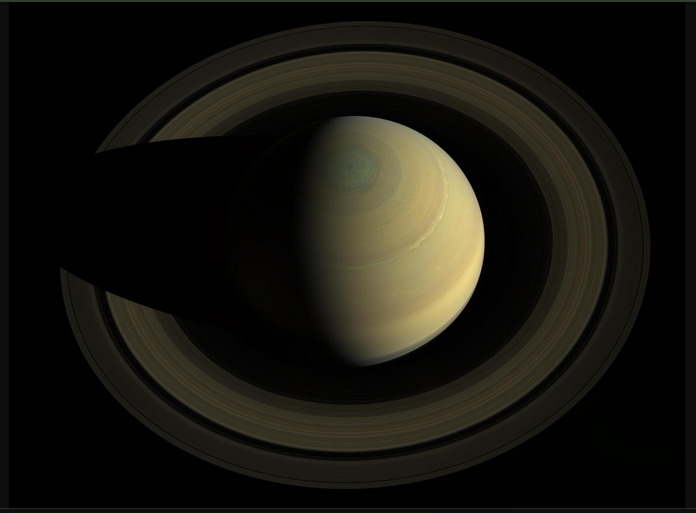
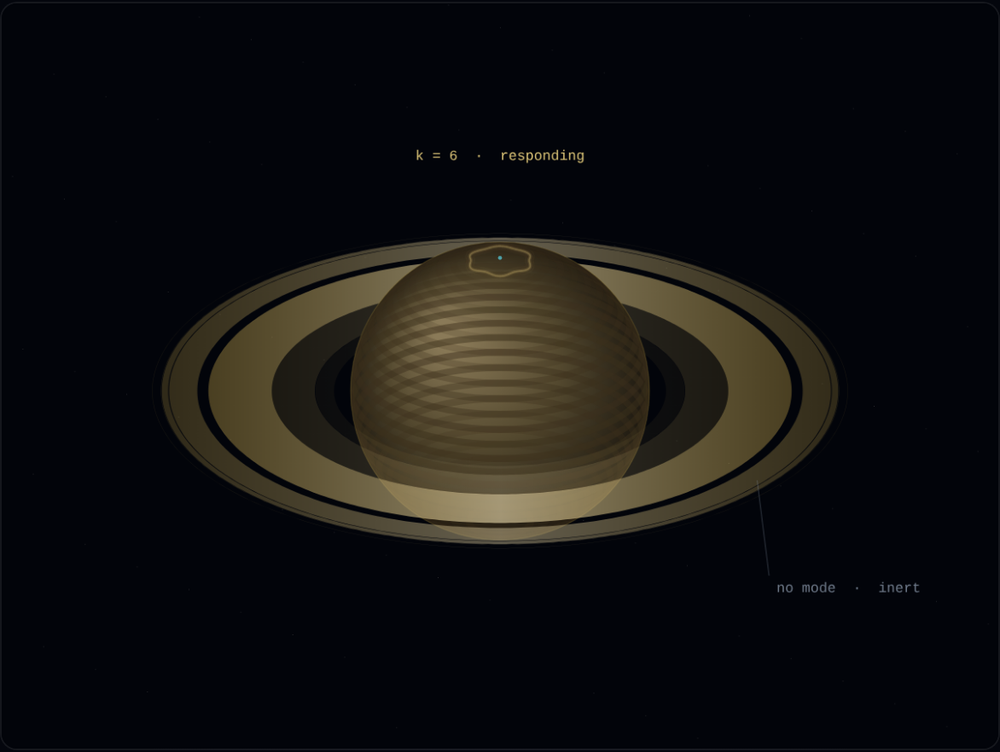

The polar hexagon
A jet stream at about 78° N carrying azimuthal wavenumber 6, stable for four decades. This is the same eigenvalue problem as a Chladni plate: a boundary condition, a mode number, nodal lines where the pattern crosses zero. Change the driving and the mode number changes with it. Chladni is not a metaphor here — it is the same mathematics.
- Set by — an eigenmode of the jet
- Indexed by — integer k
- Nodal set — 2k radial lines
- Responds to driving — yes
The ring plane
Every orbit about a centre is a great circle, and any two such orbits must cross. Collisions at those crossings drain vertical motion until the whole family lies in one plane — the plane perpendicular to the total angular momentum. Ten metres thick across a hundred thousand kilometres. There is no frequency in this story and no integer to change.
- Set by — collisions + conserved L
- Indexed by — nothing
- Nodal set — the equatorial plane
- Responds to driving — no

Cassini, north-polar view. The hexagon is the grey-green cap; the dark bands across the northern hemisphere are the rings’ own shadow. Image: NASA / JPL-Caltech / Space Science Institute — public domain.

The scene above, drawn from the stated radii and a wavenumber-k jet. Everything here is a claim you can check against the photograph beside it — which is the point of putting them next to each other.
Cassini Division · 2:1 resonance with Mimas · A ring outer edge · 7:6 with Janus and Epimetheus · Encke Gap · Pan, orbiting inside it · Keeler Gap · Daphnis, orbiting inside it
A mode number predicts a spacing law. The moons predict specific radii, and the moons are what is measured. The rings in the scene above are drawn at their real radii in units of Saturn's equatorial radius, not at Bessel zeros.
EMMEs/PolarVortex.lean formalises a model of the polar region — a
PolarVortex structure with fields for the hexagon and vortex
angular velocities — and proves consequences within it: vortex_hexagon_decoupled,
spatial_separation, limit_cycle_is_fixed_point,
interior_flows_outward, exterior_flows_inward. These are true
of the model. They are not measurements of Saturn.WaveNumber6/Wavenumber6.lean proves arithmetic about the number six —
2 * 3 = 6, 6 ≠ 4, 6 ≠ 8, 6 % 6 = 0.
Sorry-free, and true. They do not verify that Saturn's jet carries
wavenumber 6. That is an observation, from Voyager and Cassini, and no
formalisation in this repository replaces it. Any caption reading
“six-fold symmetry verified in Lean” is claiming more than the file delivers.
ṛ = r(1 − r²) — the same object
LAW3M is built on, where it is called a
logistic contraction. That word is exact, and now checked:LogisticRadial.lean proves that in u = r² the law becomes the logistic equation
u̇ = 2u(1 − u); that linearising at the cycle gives exactly
−2, the transverse Lyapunov exponent, derived rather than declared; and that
1/(1 + e−2t) solves it — so the sigmoid sits in this framework
as the time course of the approach to the ring, not as an operator.Ten declarations, compiled against Mathlib (lean4 v4.33.1), each probed with
#print axioms and reporting exactly
[propext, Classical.choice, Quot.sound]. No sorryAx, no
native_decide. The file also records, in its own header, what it does
not establish.Further: 3M index · LAW3M · Nodal Sets · Cimática com Máquinas